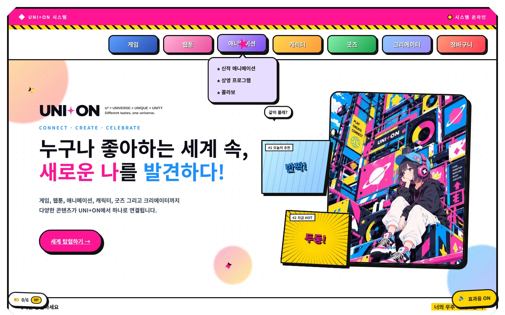
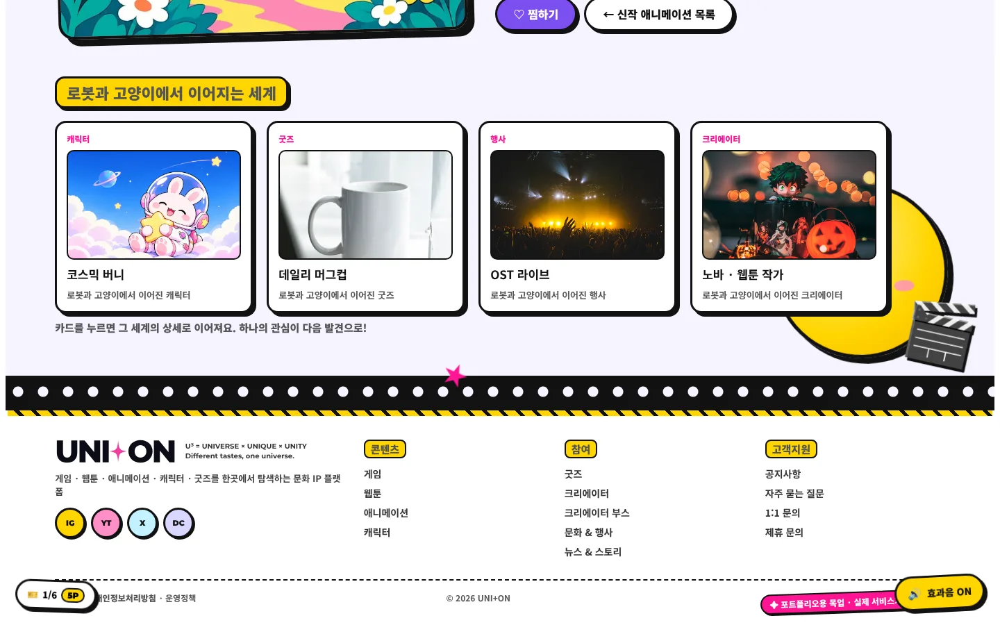
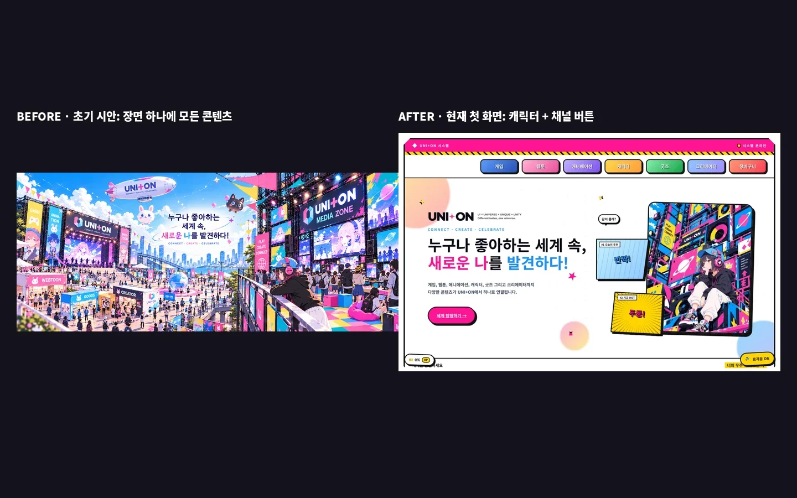
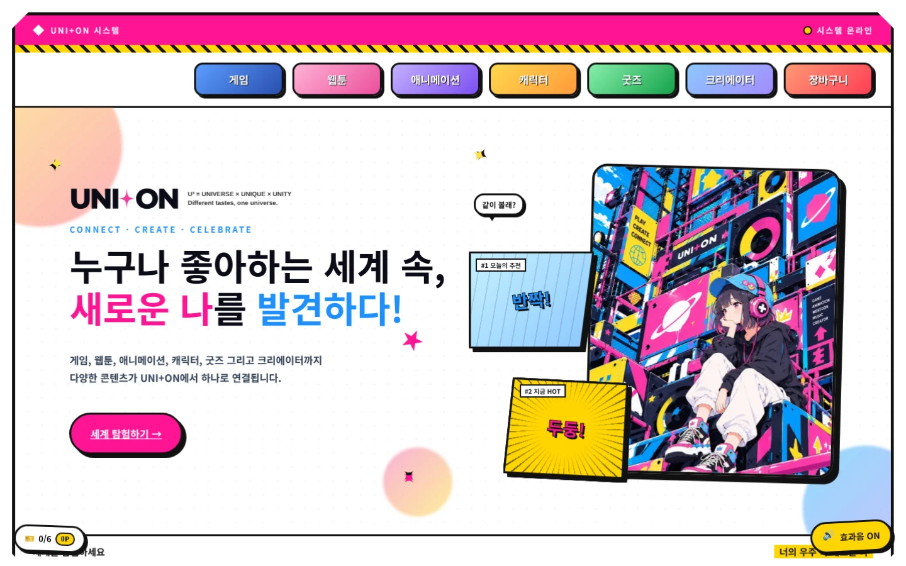
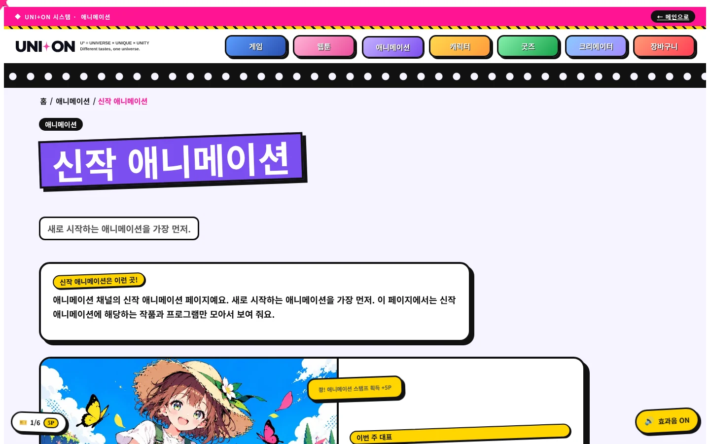
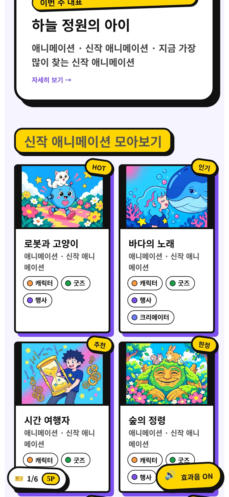

UNI+ON
게임·웹툰·굿즈를 한곳에서 찾는 문화 IP 플랫폼
01 · CHALLENGE왜 만들었나
문제게임·웹툰 굿즈가 흩어져 찾기 어렵다.
목표카테고리 탐색에서 장바구니까지 이어지는 하나의 흐름으로 해결한다.
02 · UX사용자 흐름과 근거
카테고리 탐색→상세→장바구니

문제분류가 많아지면 원하는 곳을 찾기 어렵다.
해결채널 6개와 장바구니를 상단 메뉴로 고정하고, 마우스를 올리면 세부 페이지 입구를 말풍선으로 보여준다.

문제작품만 보고 끝나면 다음 탐색이 끊긴다.
해결상세 화면 아래에 캐릭터 · 굿즈 · 행사 · 크리에이터 카드를 두어 다른 채널로 이어지게 했다.
03 · PROCESS & DECISION바뀐 과정과 선택

변화축제장 한 장면에 모든 콘텐츠를 담은 첫 화면을, 캐릭터 키 비주얼과 채널 버튼만 남기는 구성으로 줄였다.
B안 대신 C안투표 1위였던 B안(사이버펑크) 대신 C안(팝 그래픽)을 골랐다. 실제 작품 사진을 얹어 보니 B안은 어두운 화면에 콘텐츠가 묻히고, C안에서 콘텐츠가 가장 잘 보였다.
04 · RESULT핵심 화면



05 · 툴사용한 툴
Notion(기획) · PowerPoint(기획서) · Claude(시안·구현) · ChatGPT / Gemini / Grok(일러스트) · Unsplash(사진) · GitHub + Vercel(배포)
사이트 보기 ↗